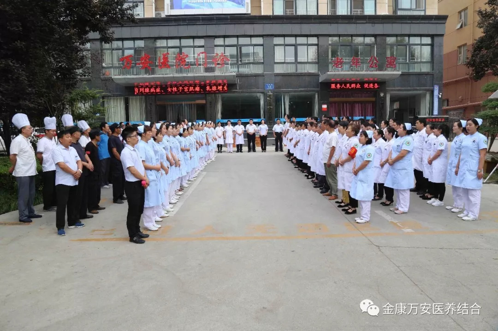
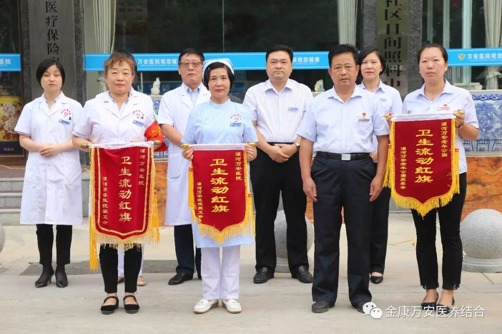

2018年9月10日早上，漯河万安康复医院、万安老年公寓召开周一分享晨会，晨会由自律办主任王小虎主持，院长王卫峰、业务院长王立信、业务院长银令令、业务院长刘洋、后勤院长杨延顺、业务院长万素华等院领导参加此次晨会。
 后勤院长杨延顺为养老部、二专办公室和门诊部颁发上周卫生流动红旗。
晨会进行时，本院的一位患者杨大爷及其家属专程赶来为我院康复科的全体医护人员送上了一面锦旗。
杨大爷是舞阳县保和乡大路李村人，于2018年7月17日突发脑梗塞入住舞阳县某医院偏瘫专科。经过15天的救治后，杨大爷已脱离了生命危险，可是左侧身体处于偏瘫状态，无法正常生活，这让他们家人非常担心。于是到处咨询医生和心脑血管方面专家，后来打听到身边有朋友在我院康复科治疗后恢复的很好，8月1日，家属将杨大爷送至我院康复科进行系统的康复治疗。
入院后，我院康复科的专家老师们对其经过会诊、讨论，专门制定了一套康复计划。
经过35天康复科的精心治疗，现在杨大爷的左手已经可以自行拿东西了，并且可自行行走，这让他们全家激动不已。为此特意送来一面锦旗表达他们全家人对我院的感激之情，并对我院康复科全体医护人员的精心照料很是感动，连连说，是万安康复医院的医护团队，再次点燃了他们全家幸福的希望。
王院长对我院上周工作进行总结，并对本周工作进行安排部署，并再次强调以下两点：一是要加强安全工作；二是要继续严抓、严管“两污一废工作”，大家要认识到，医疗废物、污泥、污水管理工作不仅是院内工作的重中之重，同时也是每位家人的职责所在。